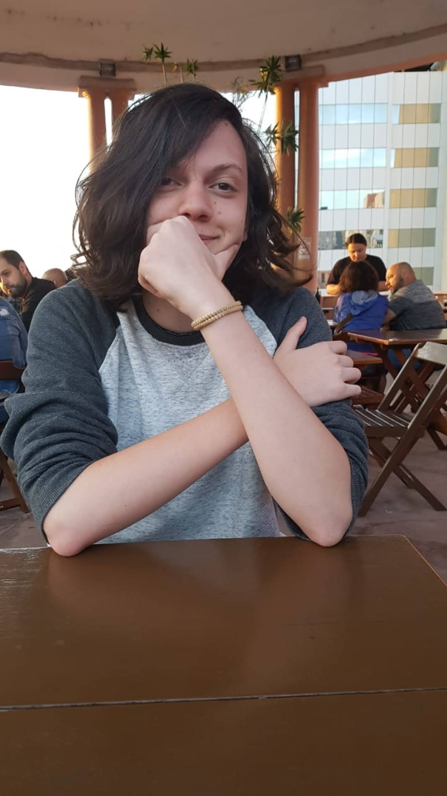

Bruno Gottschalk Roque, estudande da turma 16 da Trybe.
Desde o inicio da turma 16, foram muitos aprendizados.
A minha experiência como aluno da Trybe está sendo ótima, eles te dão todo o suporte necessário para que você consiga evoluir e conseguir ingressar no mercado de trabalho.
Esta página tem como objetivo mostrar tudo o que eu aprendi nesses primeiros dias do curso da Trybe